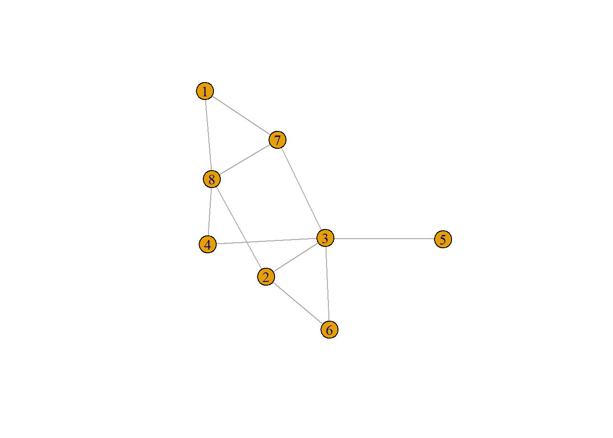

The Centrality Cube
Brandes, Borgatti, and Freeman (2016) discuss the centrality “cube,” an interesting and intuitive way to understand the way betweenness centrality works, as well as the dual connection between closeness and betweenness.
Let us illustrate using a simple example. We begin by creating an Erdos-Renyi graph with eight nodes and connection probability \(p = 0.5\):
The resulting graph looks like:

The basic innovation behind the centrality cube is to store the intermediation information among every node triplet in the graph \(s\), \(r\), \(b\) (standing for “sender,” receiver,” and “broker”) in a three dimensional array rather than the usual two dimensional matrix.
The three dimensional array can be thought of as a “cube” by stacking multiple reachability matrices between every pair \(s\) and \(r\) along a three dimensional dimension \(b\). So each “b-slice” of the cube will contain the number of times node \(b\) stands in a shortest path between \(s\) and \(r\) divided by the total number of paths between \(s\) and \(r\) which as you recall computes the pairwise betweenness of \(b\) with respect to \(s\) and \(r\).
Let’s see how that works.
Building the Cube
We begin by writing a simple user-defined function to count the total number of shortest paths between each pair of nodes:
The function is called nsp and takes a graph as input and returns and matrix called \(\mathbf{S}\) with entries \(s_{ij}\) equal to the total number of shortest paths between \(i\) and \(j\). This is done by computing the length of the list returned by the all_shortest_paths function in igraph for each pair of non-adjacent nodes. This is done in two steps.
First, we check whether \(j\) is a neighbor of \(i\) using the
neighborsfunction inigraph. Theneighborsfunction takes a graph and a node id as input and returns a vector of that node’s neighbors in the graph. We want the function to update the \(S\) matrix only when \(i\) and \(j\) are not adjacent (indirectly connected).Second, we use the
all_shortest_pathsfunction to actually compute the number of shortest paths between \(i\) and \(j\). This function takes three inputs: (1) A graph object, (2) a sender node id, and (3) a receiver node id (which can be a vector of receiver nodes), and returns alistof the paths between the sender and receiver nodes in the form of vectors of node ids defining each path as elements of a list called “vpaths.”
Now we are ready to write a user defined function to build the cube. Here’s a not-so-efficient (programming wise) but working example:
cube <- function(g) {
n <- vcount(g)
c <- array(rep(n^3, 0), c(n, n, n))
S <- nsp(g)
for (b in 1:n) {
for (s in 1:n) {
for (r in 1:n) {
if (s != r & r %in% neighbors(g, s) == FALSE) {
p.sr <- all_shortest_paths(g, s, r)$vpaths
b.sr <- lapply(p.sr, function(x) {x[-c(1, length(x))]})
c[s, r, b] <- sum(as.numeric(sapply(b.sr, function(x) {b %in% x})))
c[s, r, b] <- c[s, r, b]/S[s, r]
}
}
}
}
c[is.na(c)] <- 0
return(c)
}In line 1, we name the function cube. Line 3 initializes the array in R. It takes a string of zeros of length \(n^3\) where \(n\) is the number of nodes and crams them into an \(n \times n \times n\) array. In this case, since \(n = 8\), this means eight empty matrices of dimensions \(8 \times 8\) stacked together to form our cube full of zeros. The \(ijk^{th}\) cell of the array corresponds to sender \(i\), receiver \(j\) and broker node \(k\). Line 4 computes the matrix \(S\) containing the number of shortest paths between every sender and receiver node in the graph.
Lines 5-15 populate the cube with the required information using an (inefficient) triple for loop. As noted some, useful igraph functions come into play here:
In line 8 the
ifconditional inside the triple loop uses theneighborsfunction inigraphand checks that node \(r\) is not a neighbor of \(s\) (if they are directly connected then node \(b\) cannot be a broker).After we check that \(s\) and \(r\) are not neighbors, we use the
all_shortest_pathsfunction inigraphto get all the shortest paths between \(s\) and \(r\) in line 9.Line 10 uses some
lapplymagic to drop the source and receiver nodes from the list of node ids vectors returned by theall_shortest_pathsfunction.Line 11 uses additional
sapplymagic and the baseRfunction%in%to check how many times each broker node \(b\) shows up in that list of shortest paths as an inner node between \(s\) and \(r\); we put that number in the \(ijk^{th}\) cell of the array, and loop through all triplets until we are done.Line 12 takes the number computed in line 11 and divides by the total number of shortest paths between \(s\) and \(r\) which is the betweenness ratio we are seeking.
Exploring the Cube
Once we have our array, we can create all kinds of interesting sub-matrices containing the intermediation information in the graph by summing rows and columns of the array along different dimensions.
First, let us see what’s in the cube. We can query specific two-dimensional sub-matrices using an extension of the usual format for querying matrices in R for three-dimensional arrays. For instance this:
[,1] [,2] [,3] [,4] [,5] [,6] [,7] [,8]
[1,] 0.0 0 0.00 0 0.00 0.5 0 0.00
[2,] 0.0 0 0.00 0 0.00 0.0 0 0.00
[3,] 0.0 0 0.00 0 0.00 0.0 0 0.33
[4,] 0.0 0 0.00 0 0.00 0.0 0 0.00
[5,] 0.0 0 0.00 0 0.00 0.0 0 0.33
[6,] 0.5 0 0.00 0 0.00 0.0 0 1.00
[7,] 0.0 0 0.00 0 0.00 0.0 0 0.00
[8,] 0.0 0 0.33 0 0.33 1.0 0 0.00Creates a three-dimensional matrix of pairwise betweenness probabilities and assigns it to the srb object in line 1, and looks at the \(s_{\bullet} \times r_{\bullet} \times b_2\) entry in line 2.
Each entry in the matrix is the probability that node 2 stands on a shortest path between the row sender and the column receiver node. For instance, the 0.33 in the entry corresponding to row 5 and column 8 tells us that node 2 stands in one third of the shortest paths between nodes 5 and 8 (there are 3 distinct shortest paths between 5 and 8).
Because each sub-matrix in the cube is a matrix, we can do the usual matrix operations on them. For instance, let’s take the row sums of the \(s\) to \(r\) matrix corresponding to node 3 as the broker. This can be done like this:
1 2 3 4 5 6 7 8
1.5 2.0 0.0 3.0 6.0 3.5 3.0 1.0 As Brandes, Borgatti, and Freeman (2016), note this vector gives us the dependence of each node in the graph on node 3. Obviously node 3 doesn’t depend on itself so there is a zero on the third spot in the vector. As is clear from the plot, node 5 is the most dependent on 3 for intermediation with the rest of the nodes in the graph.
We can also pick a particular sender and receiver node and sum all their dyadic entries in the cube across the third (broker) dimension:
This number is equivalent to the geodesic distance between the nodes minus one:
Betweenness and Closeness in the Cube
The betweenness centrality of each node is encoded in the cube, because we already computed the main ratio that the measure depends on. For instance, let’s look at the matrix composed by taking the slice of cube that corresponds to node 3 as a broker:
[,1] [,2] [,3] [,4] [,5] [,6] [,7] [,8]
[1,] 0.0 0.0 0 0.0 1 0.5 0.0 0
[2,] 0.0 0.0 0 0.5 1 0.0 0.5 0
[3,] 0.0 0.0 0 0.0 0 0.0 0.0 0
[4,] 0.0 0.5 0 0.0 1 1.0 0.5 0
[5,] 1.0 1.0 0 1.0 0 1.0 1.0 1
[6,] 0.5 0.0 0 1.0 1 0.0 1.0 0
[7,] 0.0 0.5 0 0.5 1 1.0 0.0 0
[8,] 0.0 0.0 0 0.0 1 0.0 0.0 0The sum of the all the cells in this matrix (divided by two) correspond to node 3’s betweenness centrality:
So to get each node’s betweenness we just can just sum up the entries in each of the cube’s sub-matrices:
b.cube <- round(colSums(srb, dims = 2)/2, 2)
b.igraph <- round(betweenness(g), 2)
names(b.cube) <- 1:vcount(g)
names(b.igraph) <- 1:vcount(g)
b.cube 1 2 3 4 5 6 7 8
0.00 2.17 10.00 0.67 0.00 0.00 3.17 4.00 1 2 3 4 5 6 7 8
0.00 2.17 10.00 0.67 0.00 0.00 3.17 4.00 Note the neat trick of using the argument dims = 2 in the usual colSums command. This tells colSums that we are dealing with a three dimensional matrix, and that what we want is the sum of the columns across the cube’s third dimension (the brokers). Note also that we divide the cube betweenness by two because we are summing identical entries across the upper and lower triangle of the symmetric dyadic brokerage matrices inside the cube (not surprisingly, node 3 is the top betweenness centrality node).
As Brandes, Borgatti, and Freeman (2016) point out, using the cube info, we can build a matrix of dependencies between each pair of nodes. In this matrix, the rows correspond to a sender (or receiver) node, the columns to a broker node and the \(sb^{th}\) entry contains the sum of the proportion of paths containing the broker nodes that starts with the sender node and end with some other node in the graph.
Here’s a function that uses the cube info to build the dependency matrix that Brandes, Borgatti, and Freeman (2016) talk about using the cube as input:
This function just takes the various vectors formed by the row sums of the sender-receiver matrix across each value of the third dimension (which is just each node in the graph when playing the broker role). It then returns a regular old \(n \times n\) containing the info.
Here’s the result when applied to our little example:
library(kableExtra)
kbl(round(dep.ij(srb), 2),
format = "html", align = "c", row.names = TRUE,
caption = "Dependence Matrix.") %>%
column_spec(1, bold = TRUE) %>%
kable_styling(bootstrap_options = c("hover", "condensed", "responsive"))| 1 | 2 | 3 | 4 | 5 | 6 | 7 | 8 | |
|---|---|---|---|---|---|---|---|---|
| 1 | 0 | 0.50 | 1.5 | 0.00 | 0 | 0 | 2.50 | 2.5 |
| 2 | 0 | 0.00 | 2.0 | 0.00 | 0 | 0 | 0.00 | 2.0 |
| 3 | 0 | 0.33 | 0.0 | 0.33 | 0 | 0 | 1.33 | 0.0 |
| 4 | 0 | 0.00 | 3.0 | 0.00 | 0 | 0 | 0.00 | 2.0 |
| 5 | 0 | 0.33 | 6.0 | 0.33 | 0 | 0 | 1.33 | 0.0 |
| 6 | 0 | 1.50 | 3.5 | 0.00 | 0 | 0 | 0.50 | 0.5 |
| 7 | 0 | 0.00 | 3.0 | 0.00 | 0 | 0 | 0.00 | 1.0 |
| 8 | 0 | 1.67 | 1.0 | 0.67 | 0 | 0 | 0.67 | 0.0 |
Note that this is valued matrix that is also asymmetric. Take for instance, node 3. Every node in the graph depends on node 3 for access to other nodes, but node 3 does not depend on nodes 1, 5, 6, or 8.
Interestingly, as Brandes, Borgatti, and Freeman (2016) also show, the betweenness centrality also can be calculated from the dependency matrix! All we need to do is compute the column sums, equivalent to in-degree in the directed dependence network:
Even more interestingly, closeness centrality is also in the dependence matrix! It is given by the outdegree of each actor in the directed dependence network, corresponding to the row sums of the matrix (shifted by a constant given by \(n-1\)).
c.c <- rowSums(distances(g))
c.d <- rowSums(dep.ij(srb)) + (vcount(g) - 1)
names(c.c) <- 1:vcount(g)
names(c.d) <- 1:vcount(g)
round(1/c.c, 3) 1 2 3 4 5 6 7 8
0.071 0.091 0.111 0.083 0.067 0.077 0.091 0.091 1 2 3 4 5 6 7 8
0.071 0.091 0.111 0.083 0.067 0.077 0.091 0.091 Here we see that node 3 is also the top in closeness, followed closely (pun intended) by nodes 2, 7, and 8. This makes sense because an actor with high closeness is one that has low dependence on key nodes to be able to reach others.
Of course, closeness is also in the cube because of the mathematical relationship we saw earlier between the sum of entries between senders and receivers across brokers in the cube and the geodesic distance.
For instance, let’s get the matrix corresponding to node 3’s role as sender across all brokers and receivers:
[,1] [,2] [,3] [,4] [,5] [,6] [,7] [,8]
[1,] 0 0.00 0 0.00 0 0 1.00 0
[2,] 0 0.00 0 0.00 0 0 0.00 0
[3,] 0 0.00 0 0.00 0 0 0.00 0
[4,] 0 0.00 0 0.00 0 0 0.00 0
[5,] 0 0.00 0 0.00 0 0 0.00 0
[6,] 0 0.00 0 0.00 0 0 0.00 0
[7,] 0 0.00 0 0.00 0 0 0.00 0
[8,] 0 0.33 0 0.33 0 0 0.33 0The entries of this matrix give us the probability that node 3 is the sender, whenever the row node is the is the broker (an inner node in the path) and the column node is the receiver.
For instance, the value 0.3 in row 8 and column 1 tells us that node 3 is the sender node in one third of the paths that end in node 1 and feature node 8 as a broker.
Interestingly, the sums of the entries in this matrix are equivalent to the sum of the geodesic distances between node 3 and every other node in the graph shifted by a constant (\(n- 1\)):
So the closeness centrality can be computed from the cube as follows:
[1] 0.071 0.091 0.111 0.083 0.067 0.077 0.091 0.091Which is the same as: